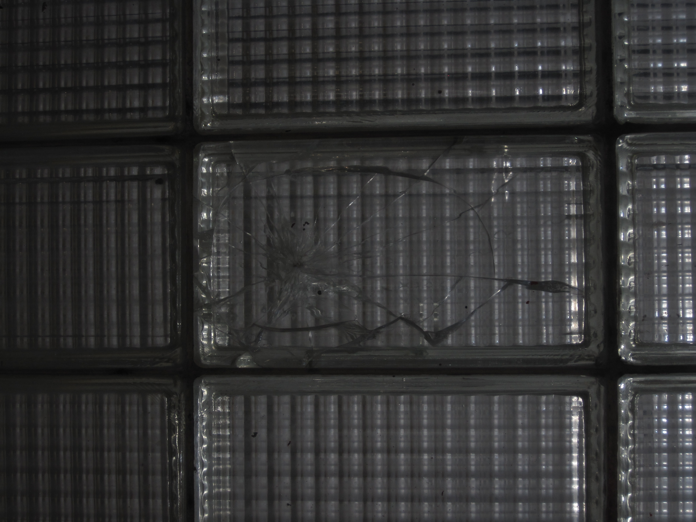
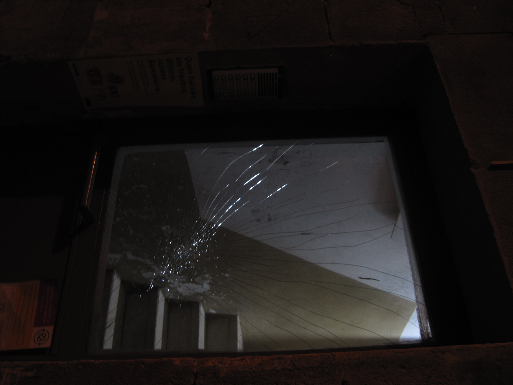
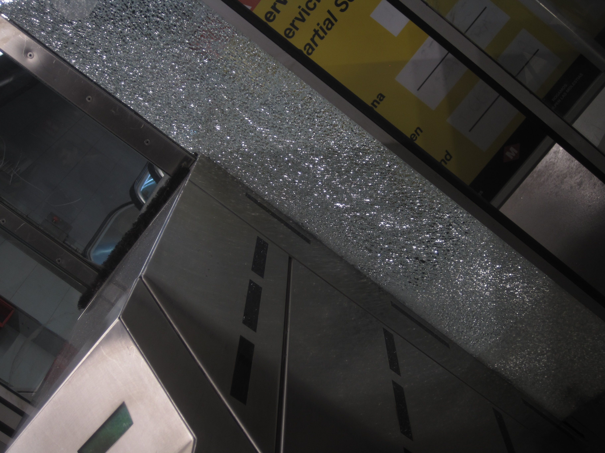

Una col·lecció de fotografies de diferents ciutats unides per la bellesa dels vidres trencats. Ja sigui en espais públics o privats, les formes caleidoscòpiques ens recorden a una teranyina d'aranya, i com si fóssim nosaltres l'insecte, ens atrapen captivats per la seva forma i patrons.




